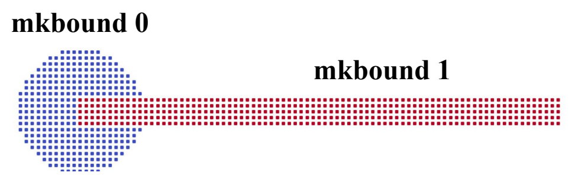
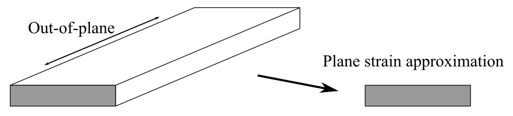
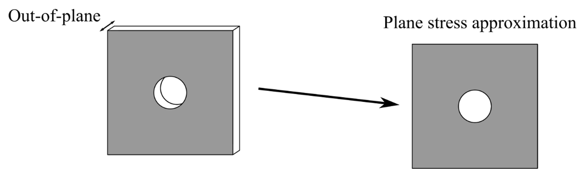
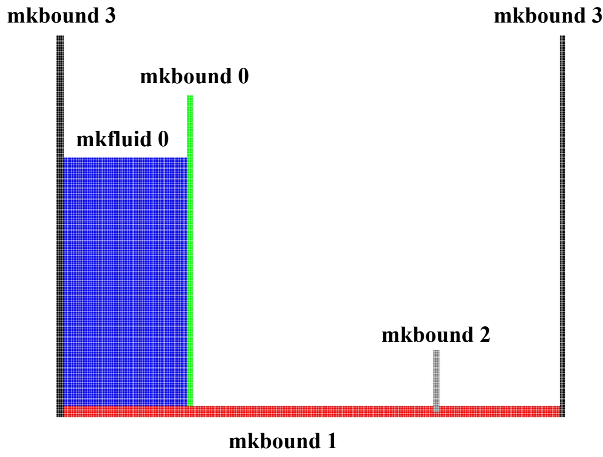

Flexible structures¶
Under review by Joseph O'Connor and Yi Zhan
Total Lagrangian SPH structural dynamics, material models, clamps and fluid–structure interaction in DualSPHysics v6.
Scope and structural formulation¶
The Flexible Structures functionality represents deformable solids using a Total Lagrangian SPH (TL-SPH) formulation integrated into DualSPHysics. Structural particles carry the displacement, velocity and deformation of the solid. When fluid is present, the fluid treats the structure as a moving boundary and the structural dynamics responds to the fluid loading. This supports structural-only configurations as well as flexible fluid–structure interaction (FSI).
This page documents the flexstrucs functionality. Its structural model is an internal particle formulation, distinct from the partitioned SPH–FEA coupling through ChronoFEA. It does not require a beam mesh, beam-node declarations or a Chrono mechanical link to compute the deformation described here. A constitutive model number under flexstrucbody must not be interpreted as a ChronoFEA element type. The two approaches are complementary modelling choices, rather than interchangeable XML interfaces.
The formulation is described by J. O'Connor and B. D. Rogers, Journal of Fluids and Structures (2021). Three parts of the documented method are particularly relevant to configuration:
- A material reference frame describes the solid relative to its initial configuration. Structural neighbour pairs and reference gradients use that configuration; the formulation addresses the tensile-instability problems associated with conventional solid SPH treatments.
- Kernel correction restores linear consistency near geometric boundaries, where a truncated particle neighbourhood would otherwise affect the structural approximation.
- Hourglass suppression controls zero-energy modes associated with rank deficiency in the collocated particle discretisation. Its coefficient can change the effective stiffness and is therefore a numerical modelling choice.
These are the roles of the formulation's components, not guarantees of stability or accuracy for every geometry and material. The structural model must still be resolved adequately and checked for the intended deformation and loading.
Particle representation and deformation¶
The structure is generated as boundary particles with its own mkbound. A motion declaration classifies that marker as moving, while flexstrucbody assigns the structural material and links it to its clamp. Structural connectivity comes from particle neighbours in the material reference configuration; no user-specified finite-element connectivity or nodal rotational degrees of freedom are defined by this XML.
Let \(\mathbf X\) denote the initial material position and \(\mathbf x\) the current position. The current structural implementation evaluates a deformation gradient and Green–Lagrange strain:
The selected constitutive matrix maps the strain to second Piola–Kirchhoff stress; the internal force calculation uses first Piola–Kirchhoff stress:
Here \(\mathsf C\) is constructed from the material properties and the chosen two- or three-dimensional model. These material stress measures differ from the fluid pressure used at the FSI boundary. The plane-stress and plane-strain choices below determine the appropriate reduced constitutive coefficients. They are not options to change the fluid equation of state.
XML organisation and setup sequence¶
The setup has three linked parts: generate the clamp and structure, declare the structure as moving, and assign its structural properties. All three must use consistent marker values.
| XML location | Responsibility |
|---|---|
case/casedef/geometry |
Particle spacing, geometry and marker assignment |
case/casedef/motion |
Moving classification for the flexible body; prescribed motion for other moving objects |
case/casedef/normals |
Initial boundary normals when mDBC is used |
case/execution/special/flexstrucs |
List of structural-body definitions |
flexstrucs/flexstrucbody |
Body marker, clamp marker and material/numerical properties |
case/execution/parameters |
Boundary treatment, slip mode, integration and other solver settings |
The snippets on this page are independent excerpts from the stated source cases. They do not form a new combined simulation. Preserve the complete selected case's constants, particle-generation order, marker assignments, data files, boundary normals and numerical settings.
Geometry, clamps and runtime motion¶
Structural-only Turek–Hron configuration¶
The CSM3 example defines the clamp first using mkbound=0, then draws the flexible strip with mkbound=1 embedded in it. Drawing order and embedding establish the intended attachment; mkclamp alone does not create missing clamp particles or repair a geometric gap.
The clamp is a sphere of radius 0.05 m centred at (0.2, 0, 0.2) m. In the two-dimensional x–z case, it appears as a circular support. The strip starts at (0.2, −0.01, 0.19) m and has size (0.4, 0.02, 0.02) m. Retain the out-of-plane generation coordinates even though the computational case is two-dimensional.
XML excerpt — csm3-geometry. XML location: case/casedef/geometry/commands. Source: examples/flexstruc/02_TurekHron/CaseTurekHronCSM3_Def.xml. This is a selection from that case, not a complete executable configuration. Retain its surrounding geometry, variables and inputs.
<mainlist>
<setdrawmode mode="full" />
<setmkbound mk="0" />
<drawsphere radius="0.05">
<point x="0.2" y="0.0" z="0.2" />
</drawsphere>
<setmkbound mk="1" />
<drawbox>
<boxfill>solid</boxfill>
<point x="0.2" y="-0.01" z="0.19" />
<size x="0.4" y="0.02" z="0.02" />
</drawbox>
</mainlist>

Moving classification with mvnull¶
The flexible marker must belong to the moving-boundary category. The current reader rejects a body marker that is not a moving boundary. In the CSM3 case, objreal ref="1" refers to that marker and mvnull supplies the required motion classification without prescribing a rigid trajectory to replace the structural solution:
XML excerpt — csm3-runtime-motion. XML location: case/casedef. Source: examples/flexstruc/02_TurekHron/CaseTurekHronCSM3_Def.xml. This is a selection from that case, not a complete executable configuration. Retain its surrounding geometry, variables and inputs.
mvnull does not clamp the body or specify that it remains undeformed. Its deformation is computed by the structural solver during execution. The motion identifier inside begin/mvnull is separate from the boundary marker selected by objreal ref.
mkbound on flexstrucbody identifies the deformable population. mkclamp identifies the associated clamp population. The current reader accepts fixed or moving boundary markers as clamps and rejects a clamp marker that is itself a flexible structure. A prescribed moving support can therefore be represented separately from the deformable material. These clamp declarations do not define arbitrary hinge, contact or multibody joints.
Material properties and hourglass control¶
The CSM3 structural definition uses density 1000 kg/m³, Young's modulus \(1.4\times10^6\) Pa, Poisson's ratio 0.4, plane strain and zero hourglass correction. Its mkbound=1 and mkclamp=0 match the preceding geometry and motion:
XML excerpt — csm3-material. XML location: case/execution/special. Source: examples/flexstruc/02_TurekHron/CaseTurekHronCSM3_Def.xml. This is a selection from that case, not a complete executable configuration. Retain its surrounding geometry, variables and inputs.
<flexstrucs>
<flexstrucbody mkbound="1" mkclamp="0">
<density value="1000.0" comment="Mass density" units_comment="kg/m^3" />
<youngmod value="1.4e6" comment="Young Modulus" units_comment="Pa" />
<poissratio value="0.4" comment="Poisson ratio" />
<constitmodel value="1" comment="Constitutive model 1:Plane Strain (2D), 2:Plane Stress (2D), 3:St. Venant Kirchhoff (3D)" />
<hgfactor value="0.0" comment="Hourglass correction factor: keep as low as possible (default=0)" />
</flexstrucbody>
</flexstrucs>
| Element/attribute | Physical or numerical meaning | Requirement or documented default |
|---|---|---|
mkbound |
Flexible body's boundary marker | Required; must identify a moving population |
mkclamp |
Marker or marker list for its associated clamp populations | Retain the selected case's attachment definition |
density value |
Structural mass density, kg/m³ | Required; independent of the fluid reference density |
youngmod value |
Young's modulus, Pa | Required |
poissratio value |
Poisson's ratio | Required; dimensionless |
constitmodel value |
Plane strain, plane stress or 3D St. Venant–Kirchhoff model | Required; must agree with dimensionality |
hgfactor value |
Hourglass suppression coefficient | Optional; default 0 |
Structural mass follows the structural density and the reference particle volume. Do not replace density with the fluid's rhop0 merely because both are densities. Similarly, youngmod is a continuum elastic modulus, rather than a spring stiffness in N/m or an FEA sectional rigidity. The documented material definition does not introduce a generic physical damping coefficient; hourglass suppression is not a substitute for a calibrated material damping law.
Selecting the hourglass factor¶
Non-zero hgfactor suppresses zero-energy deformation modes but can increase effective structural stiffness. The documented setup guidance is to start at zero and increase it only if hourglass instabilities appear. A value of 0.1 is reported as useful in the source examples, not a universal optimum or an innocuous default.
The source cases intentionally differ: CSM3 uses 0, while the FSI2 and dam-break examples use 0.1. These values are retained below. Reducing a copied 0.1 to zero, or increasing a copied zero to 0.1, changes the numerical model even though the material density, modulus and Poisson's ratio remain the same. Review the deformation response when selecting the coefficient for a new configuration.
Constitutive models and dimensional assumptions¶
constitmodel |
Available dimensionality | Meaning |
|---|---|---|
| 1 | Two-dimensional | Plane strain: zero out-of-plane strain |
| 2 | Two-dimensional | Plane stress: zero out-of-plane stress |
| 3 | Three-dimensional | Hyperelastic St. Venant–Kirchhoff model |
The current reader rejects model 3 in a two-dimensional simulation and models 1/2 in a three-dimensional simulation. A small geometric thickness used to generate a two-dimensional particle section is not, by itself, a request for a three-dimensional structural calculation.
Plane strain¶
Plane strain represents a body whose out-of-plane deformation is constrained. It is the documented approximation for problems that are very thick in that direction. Its defining assumption is
The out-of-plane stress need not vanish. In the source two-dimensional x–z configurations, the out-of-plane direction is y. The CSM3 and dam-break examples select model 1.

Plane stress¶
Plane stress represents a thin body with negligible out-of-plane stress:
Its reduced stiffness differs from the plane-strain stiffness. Choosing model 2 therefore changes the structural response rather than simply changing an output label. The rolling-tank and flexible wave-loaded strip examples use this model.

Three-dimensional St. Venant–Kirchhoff model¶
Model 3 is the documented three-dimensional option. It extends an elastic stress–strain relation to geometrically nonlinear deformation through the material strain and stress measures introduced above. It does not add plasticity, fracture or a general viscoelastic material law. The three-dimensional dam-break case retains the following structural properties and attachment markers:
XML excerpt — three-dimensional-material. XML location: case/execution/special. Source: examples/flexstruc/01_DamBreak/CaseDambreak3D_FSI_Def.xml. This is a selection from that case, not a complete executable configuration. Retain its surrounding geometry, variables and inputs.
<flexstrucs>
<flexstrucbody mkbound="2" mkclamp="1">
<density value="1161.54" comment="Mass density" units_comment="kg/m^3" />
<youngmod value="8.75e5" comment="Young Modulus" units_comment="Pa" />
<poissratio value="0.49" comment="Poisson ratio" />
<constitmodel value="3" comment="Constitutive model 1:Plane Strain (2D), 2:Plane Stress (2D), 3:St. Venant Kirchhoff (3D)" />
<hgfactor value="0.1" comment="Hourglass correction factor: keep as low as possible (default=0)" />
</flexstrucbody>
</flexstrucs>
The generic full reference at the end uses a different illustrative modulus, \(3.5\times10^6\) Pa. The case excerpt above uses its own \(8.75\times10^5\) Pa; the generic value must not replace the case value.
Fluid loading, deformation and boundary treatment¶
In an FSI case, the fluid sees the deformable particles as a moving boundary through the selected DualSPHysics boundary treatment. Pressure and viscous interaction contribute to structural acceleration, while the evolving structural positions and velocities alter the boundary encountered by the fluid. This is a two-way interaction within the integrated SPH framework, rather than a prescribed deformation imposed independently of the fluid.
The structural internal forces use the reference-configuration neighbours, constitutive stresses, kernel correction and any selected hourglass term. Fluid boundary pressure is not the structural constitutive stress. In a structural-only case such as CSM3, the structural material and loading still determine deformation even without a surrounding fluid population; that example retains its source gravity of (0, 0, −2) m/s².
Normals for mDBC¶
Initial surface normals are required when mDBC is selected, as for other fixed or moving boundaries. The deforming surface must have a suitable geometric description and initial normal assignment; a flexstrucs section does not generate that information by itself. See Modified Dynamic Boundary Conditions for normal generation and boundary-layer geometry.
The current structural implementation updates a non-zero initial boundary-normal vector using the inverse transpose of the deformation gradient and retains its original magnitude:
Here the stored normal is the geometric boundary-normal vector; it is not an arbitrary unit vector supplied in place of the original surface geometry. Correct initial normals remain necessary even though the direction evolves during deformation.
The two-dimensional mDBC dam-break variant uses the generated actual-surface file in its existing geometry-normal workflow:
XML excerpt — dam-break-initial-normals. XML location: case/casedef. Source: examples/flexstruc/01_DamBreak/CaseDambreak2D_FSI_mDBC_Def.xml. This is a selection from that case, not a complete executable configuration. Retain its surrounding geometry, variables and inputs.
<normals active="true">
<norgeometry comment="Define initial configuration of normals before applying other configurations">
<geometryfile file="[CaseName]_hdp_Actual.vtk" comment="File with boundary geometry (VTK format)" />
<distanceh v="2" comment="Maximum orthogonal distance (H*value) to compute normals data (default=2)" />
<maxsizeh v="0" comment="Maximum allowed normal size (H*value) (disabled=0, default=0)" />
<svshapes v="true" comment="Saves VTK with geometry in triangles and quads with its normals for debug (default=false)" />
</norgeometry>
</normals>
The source geometry creates [CaseName]_hdp_Actual.vtk; retain its GeometryForNormals list and generation commands when using this normal configuration. The normal block alone does not create the referenced surface file.
Integration, slip and penetration controls¶
For flexible structures with mDBC, the documented and current-reader requirements are Symplectic integration and no-slip or free-slip. Use the named v6 values StepAlgorithm=SYM and SlipMode=NS or FS. Original mDBC (M22) and the zero-tangential-velocity option (V0) do not satisfy this flexible-structure check. The current reader also rejects mDBC with Verlet.
These requirements concern the mDBC combination; they are not a universal rejection of every DBC structural case using Verlet. The distributed three-dimensional dam-break and rolling-tank DBC examples retain their own VER choice.
For violent flows, fluid penetration through an mDBC boundary can disrupt the coupling. NoPenetration=Y selects the documented no-penetration treatment where required. This is a separate numerical choice and does not replace the normal definition, compatible slip mode or time integration. The current mDBC dam-break case uses the following values:
XML excerpt — dam-break-boundary-method. XML location: case/execution/parameters. Source: examples/flexstruc/01_DamBreak/CaseDambreak2D_FSI_mDBC_Def.xml. This is a selection from that case, not a complete executable configuration. Retain its surrounding geometry, variables and inputs.
<parameter key="Boundary" value="mDBC" comment="Boundary method: DBC, mDBC, MIX:MixBC (default=DBC)" />
case/execution/parameters. Source: examples/flexstruc/01_DamBreak/CaseDambreak2D_FSI_mDBC_Def.xml. This is a selection from that case, not a complete executable configuration. Retain its surrounding geometry, variables and inputs.
<parameter key="SlipMode" value="NS" comment="Slip mode for mDBC: NS:No-slip, FS:Free slip, V0:TanVel=0, M22:mDBC 2022 (default=NS)" />
case/execution/parameters. Source: examples/flexstruc/01_DamBreak/CaseDambreak2D_FSI_mDBC_Def.xml. This is a selection from that case, not a complete executable configuration. Retain its surrounding geometry, variables and inputs.
<parameter key="StepAlgorithm" value="SYM" comment="Step Algorithm: SYM:Symplectic, VER:Verlet (default=SYM)" />
case/execution/parameters. Source: examples/flexstruc/01_DamBreak/CaseDambreak2D_FSI_mDBC_Def.xml. This is a selection from that case, not a complete executable configuration. Retain its surrounding geometry, variables and inputs.
<parameter key="NoPenetration" value="Y" comment="Activate No-Penetration option for mDBC: Y/N (default=N)" />
The older presentation expresses these choices using numeric values. The names above are the current v6 syntax. Do not transfer old numeric enumerations to new XML without checking the corresponding option. NoPenetration=Y is retained in this example; it is not asserted as a universal requirement for every flexible FSI case.
Dam-break gate and flexible barrier¶
The dam-break setup separates the prescribed release-gate motion from the computed deformation of the downstream barrier. The source teaching diagram identifies the fluid, gate, flexible structure, base clamp and tank walls:

Marker numbers in this diagram describe that teaching geometry. The current package cases shown below use a revised grouping: mkbound=0 is the tank/base clamp, mkbound=1 the gate and mkbound=2 the flexible barrier. Preserve the current case's matching geometry, motion and mkclamp; do not copy the diagram's numbers into one section of that case.
The original teaching geometry uses the following box coordinates and sizes, in metres. These retain its original particle-generation dimensions and marker grouping, separately from the current case's variable-based geometry:
| Teaching population | Marker | Initial point (x, y, z), m | Box size (x, y, z), m |
|---|---|---|---|
| Water column | mkfluid 0 | (0.0, −0.01, 0.0) | (0.2, 0.02, 0.4) |
| Release gate | mkbound 0 | (0.2, −0.01, 0.0) | (0.008, 0.02, 0.5) |
| Base clamp | mkbound 1 | (−0.008, −0.01, −0.016) | (0.816, 0.02, 0.016) |
| Flexible barrier | mkbound 2 | (0.596, −0.01, −0.008) | (0.008, 0.02, 0.098) |
| Left wall | mkbound 3 | (−0.008, −0.01, −0.016) | (0.008, 0.02, 0.616) |
| Right wall | mkbound 3 | (0.8, −0.01, −0.016) | (0.008, 0.02, 0.616) |
These literal boxes are not the same generation commands as the current package case. In particular, the current flexible-barrier x extent is 0.010 m and its gate thickness is expressed as 8*Dp; do not merge those definitions with the teaching boxes while assuming the discretisation is unchanged.
The current case defines its physical extents through these original variables. The water column is 0.2 m long and 0.4 m high; the tank is 0.8 m long and 0.6 m high. The flexible barrier occupies x=0.596–0.606 m up to z=0.09 m. Particle-generation offsets and the embedded lower part are specified in the complete geometry:
XML excerpt — dam-break-dimensions. XML location: case/casedef/geometry. Source: examples/flexstruc/01_DamBreak/CaseDambreak2D_FSI_DBC_Def.xml. This is a selection from that case, not a complete executable configuration. Retain its surrounding geometry, variables and inputs.
<predefinition>
<newvarcte mdbc="false" />
<newvarcte dom_padding="0.1" />
<newvarcte tank_min_x="0.0" tank_max_x="0.8" tank_min_z="0.0" tank_max_z="0.6" />
<newvarcte fluid_min_x="#tank_min_x" fluid_max_x="0.2" fluid_min_z="#tank_min_z" fluid_max_z="0.4" />
<newvarcte gate_min_x="0.2" gate_min_z="#tank_min_z" gate_max_z="0.5" />
<newvarcte struc_min_x="0.596" struc_max_x="0.606" struc_min_z="tank_min_z" struc_max_z="0.09" />
</predefinition>
The gate reads its vertical trajectory from DambreakGateTimeSeries.csv during the first 0.12 s. The flexible barrier instead uses mvnull. Both objects are moving populations, but their motion is supplied by different mechanisms:
XML excerpt — gate-and-barrier-motion. XML location: case/casedef. Source: examples/flexstruc/01_DamBreak/CaseDambreak2D_FSI_DBC_Def.xml. This is a selection from that case, not a complete executable configuration. Retain its surrounding geometry, variables and inputs.
<motion>
<objreal ref="1">
<begin mov="1" start="0.0" finish="0.12" />
<mvfile id="1" duration="0.12">
<file name="DambreakGateTimeSeries.csv" fields="2" fieldtime="0" fieldz="1" />
</mvfile>
</objreal>
<objreal ref="2">
<begin mov="1" start="0" />
<mvnull id="1" />
</objreal>
</motion>
case/execution/special. Source: examples/flexstruc/01_DamBreak/CaseDambreak2D_FSI_DBC_Def.xml. This is a selection from that case, not a complete executable configuration. Retain its surrounding geometry, variables and inputs.
<flexstrucs>
<flexstrucbody mkbound="2" mkclamp="0">
<density value="1161.54" comment="Mass density" units_comment="kg/m^3" />
<youngmod value="8.75e5" comment="Young Modulus" units_comment="Pa" />
<poissratio value="0.49" comment="Poisson ratio" />
<constitmodel value="1" comment="Constitutive model 1:Plane Strain (2D), 2:Plane Stress (2D), 3:St. Venant Kirchhoff (3D)" />
<hgfactor value="0.1" comment="Hourglass correction factor: keep as low as possible (default=0)" />
</flexstrucbody>
</flexstrucs>
The current DBC and mDBC two-dimensional variants use the same structural density 1161.54 kg/m³, modulus \(8.75\times10^5\) Pa, Poisson's ratio 0.49, plane-strain model and hourglass factor 0.1. Their boundary-method selection remains a separate part of the numerical configuration. The structural properties and material density must not be replaced with CSM3 values when changing the boundary treatment.
Further structural and FSI configurations¶
Turek–Hron FSI2¶
FSI2 is a fluid-loaded flexible member with its own density and marker assignments. The mDBC case uses flexible marker 2, clamp marker 1, density 10000 kg/m³, modulus \(1.4\times10^6\) Pa, Poisson's ratio 0.4, plane strain and hourglass factor 0.1:
XML excerpt — fsi2-material. XML location: case/execution/special. Source: examples/flexstruc/02_TurekHron/CaseTurekHronFSI2_mDBC_Def.xml. This is a selection from that case, not a complete executable configuration. Retain its surrounding geometry, variables and inputs.
<flexstrucs>
<flexstrucbody mkbound="2" mkclamp="1">
<density value="10000.0" comment="Mass density" units_comment="kg/m^3" />
<youngmod value="1.4e6" comment="Young Modulus" units_comment="Pa" />
<poissratio value="0.4" comment="Poisson ratio" />
<constitmodel value="1" comment="Constitutive model 1:Plane Strain (2D), 2:Plane Stress (2D), 3:St. Venant Kirchhoff (3D)" />
<hgfactor value="0.1" comment="Hourglass correction factor: keep as low as possible (default=0)" />
</flexstrucbody>
</flexstrucs>
Its moving classification selects marker 2. The complete case also contains the inlet/outlet and fluid-initialisation configuration; retain those inputs when reviewing the FSI problem. See the Inlet/Outlet guide for that separate open-boundary functionality. CSM3 and FSI2 are different load cases; the density change from 1000 to 10000 kg/m³ and the hourglass change from 0 to 0.1 must not be hidden by treating the examples as identical.
Prescribed moving clamp in a rolling tank¶
The hanging-strip case uses a rotating tank/support marker 0 and a flexible marker 1. Its support follows the original rotation file and axis, while the flexible marker uses mvnull:
XML excerpt — rolling-support-motion. XML location: case/casedef. Source: examples/flexstruc/03_RollingTank/CaseRollingTankHanging_Def.xml. This is a selection from that case, not a complete executable configuration. Retain its surrounding geometry, variables and inputs.
<motion>
<objreal ref="0">
<begin mov="1" start="0" />
<mvrotfile id="1" duration="100" anglesunits="degrees">
<file name="RollingTankHangingTimeSeries.csv" />
<axisp1 x="0.3045" y="-0.01" z="0" />
<axisp2 x="0.3045" y="0.02" z="0" />
</mvrotfile>
</objreal>
<objreal ref="1">
<begin mov="1" start="0" />
<mvnull id="1" />
</objreal>
</motion>
case/execution/special. Source: examples/flexstruc/03_RollingTank/CaseRollingTankHanging_Def.xml. This is a selection from that case, not a complete executable configuration. Retain its surrounding geometry, variables and inputs.
<flexstrucs>
<flexstrucbody mkbound="1" mkclamp="0">
<density value="1900.0" comment="Mass density" units_comment="kg/m^3" />
<youngmod value="4.0e6" comment="Young Modulus" units_comment="Pa" />
<poissratio value="0.49" comment="Poisson ratio" />
<constitmodel value="2" comment="Constitutive model 1:Plane Strain (2D), 2:Plane Stress (2D), 3:St. Venant Kirchhoff (3D)" />
<hgfactor value="0.0" comment="Hourglass correction factor: keep as low as possible (default=0)" />
</flexstrucbody>
</flexstrucs>
The source material is plane stress, with density 1900 kg/m³, modulus \(4.0\times10^6\) Pa, Poisson's ratio 0.49 and zero hourglass correction. The deep-strip variant instead uses density 1100 kg/m³ and modulus \(6.0\times10^6\) Pa. Do not interchange these material settings or the two rotation time-series files. A prescribed moving clamp is not a free rotational joint computed from a hinge model.
Flexible strip under waves¶
The flexible wave-loaded strip case retains its original material and attachment definition:
XML excerpt — wave-loaded-strip-material. XML location: case/execution/special. Source: examples/flexstruc/04_FloatingStructure/CaseFlexFloating_Def.xml. This is a selection from that case, not a complete executable configuration. Retain its surrounding geometry, variables and inputs.
<flexstrucs>
<flexstrucbody mkbound="2" mkclamp="3">
<density value="412" comment="Mass density" units_comment="kg/m^3" />
<youngmod value="5.65e5" comment="Young Modulus" units_comment="Pa" />
<poissratio value="0.49" comment="Poisson ratio" />
<constitmodel value="2" comment="Constitutive model 1:Plane Strain (2D), 2:Plane Stress (2D), 3:St. Venant Kirchhoff (3D)" />
<hgfactor value="0" comment="Hourglass correction factor: keep as low as possible (default=0)" />
<dtstaggered value="0" comment="Enable staggered dt FSI: 0=No, 1=Yes (default=0)" />
</flexstrucbody>
</flexstrucs>
The case name contains “Floating”, but the XML here is still a flexstrucbody with marker 2 and clamp marker 3. It does not declare a free six-degree-of-freedom rigid body by replacing the structural material with floatings. Its wave paddle, attachment geometry and moving classification belong to the complete case. This distinction prevents the physical appearance or filename of a buoyant strip from being mistaken for another solver interface.
Additional current controls and limits¶
The current structural reader recognises two options beyond the older dedicated format illustration:
Element under flexstrucbody |
Current reader meaning | Source default and use here |
|---|---|---|
dtstaggered value |
Enable staggered fluid/structural timesteps | False; the wave-loaded strip explicitly retains 0 |
rsterm value |
Enable a Riemann stabilisation term for the structure | False; no tuning recommendation is inferred from the older presentation |
The staggered path computes structural substeps within the fluid timestep. Its availability depends on compilation; a GPU build with that path disabled rejects its activation. Merely seeing the element in a reader does not establish availability in every binary. Neither option changes the material law into a viscous damping model. The examples above preserve their original choice and do not activate an undocumented combination.
The current implementation rejects simulation restart from a saved PART when flexible structures are active, and rejects their combination with periodic conditions. The build must include Flexible Structures support. These are current configuration checks; they are separate from a particular historical test result. No general claim is made here about all multibody collisions, floating-body combinations, mixed-boundary configurations, alternative kernels or multi-GPU execution.
For mDBC, review the structure's initial surface geometry, normals, NS/FS slip choice, Symplectic integration and any penetration control together. For the solid, review attachment geometry, particle spacing, dimensional model, density, modulus, Poisson's ratio and hourglass choice. Stiff elastic properties also affect the structural timestep estimate; copying a fluid timestep without reviewing the structural response is not a substitute for the complete case's time-integration settings.
Representative public cases¶
| Public package path | Configuration |
|---|---|
examples/flexstruc/02_TurekHron/CaseTurekHronCSM3_Def.xml |
Structural-only plane-strain strip; fixed clamp, hgfactor 0 |
examples/flexstruc/02_TurekHron/CaseTurekHronFSI2_DBC_Def.xml |
Fluid-loaded plane-strain member with DBC |
examples/flexstruc/02_TurekHron/CaseTurekHronFSI2_mDBC_Def.xml |
Corresponding mDBC configuration and initial normals |
examples/flexstruc/01_DamBreak/CaseDambreak2D_FSI_DBC_Def.xml |
Gate release and plane-strain barrier with DBC |
examples/flexstruc/01_DamBreak/CaseDambreak2D_FSI_mDBC_Def.xml |
Gate release and mDBC barrier, including no-penetration choice |
examples/flexstruc/01_DamBreak/CaseDambreak3D_FSI_Def.xml |
Three-dimensional St. Venant–Kirchhoff material |
examples/flexstruc/03_RollingTank/CaseRollingTankDeep_Def.xml |
Plane-stress strip in a prescribed rolling tank |
examples/flexstruc/03_RollingTank/CaseRollingTankHanging_Def.xml |
Hanging plane-stress strip and moving support |
examples/flexstruc/04_FloatingStructure/CaseFlexFloating_Def.xml |
Wave-loaded flexible strip with an attachment marker |
These paths identify complete source configurations. The excerpts explain their syntax and numerical choices; they do not establish physical validation, convergence or equivalence between DBC/mDBC, constitutive models or stabilisation settings. Assess particle motion, clamp attachment, deformation and boundary interaction using the complete selected case and its available output tools. This guide does not define a new structural-output XML API or imply that every internal stress measure is automatically exported.
Full Flexible Structures XML format reference¶
Source: doc/xml_format/_FmtXML__FlexibleStructure.xml. The complete supplied format below retains its original 12 March 2024 header, comments, values, order and indentation. It illustrates the structural body declaration; it is not a complete executable simulation. Its ... denotes additional definitions, while the decorative separators are part of the original reference collection.
The example modulus and constitutive model are reference values, not defaults for every material. The current-reader additions dtstaggered and rsterm described above are absent from this older file; the verbatim reference is not rewritten to insert them.
<?xml version="1.0" encoding="UTF-8" ?>
<!-- *** DualSPHysics (12-03-2024) *** -->
<!-- *** class: JSphFlexibleStructure (JSphFlexibleStructure) *** -->
<!------------------------------------------------------------------------------->
<!------------------------------------------------------------------------------->
<!-- *** Example of available execution parameters. *** -->
<!-- An option can be overridden by commenting on the XML line, using -->
<!-- <_parameter... or changing the key value. -->
<execution>
<special>
<flexstrucs>
<flexstrucbody mkbound="1" mkclamp="0">
<density value="1161.54" comment="Mass density" units_comment="kg/m^3" />
<youngmod value="3.5e6" comment="Young Modulus" units_comment="Pa" />
<poissratio value="0.49" comment="Poisson ratio" />
<constitmodel value="3" comment="Constitutive model 1:Plane Strain (2D), 2:Plane Stress (2D), 3:St. Venant Kirchhoff (3D)" />
<hgfactor value="0.1" comment="Hourglass correction factor: keep as low as possible (default=0)" />
</flexstrucbody>
...
</flexstrucs>
</special>
</execution>